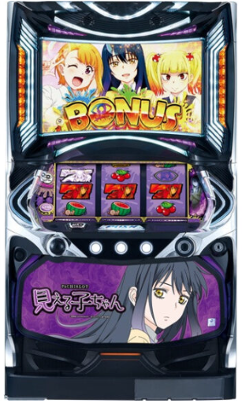

目次

パチスロ見える子ちゃんMIERUKO-CHAN ｜ パイオニア（PIONEER）
見える子ちゃん スペック・機械割
設定別ボーナス確率・機械割
| 設定 | BB合算 | RB | 合算 | 機械割 |
|---|---|---|---|---|
| 1 | 1/266.5 | 1/275.1 | 1/135.4 | 97.8% |
| 2 | 1/261.9 | 1/270.6 | 1/133.1 | 98.8% |
| 3 | 1/253.4 | 1/261.1 | 1/128.6 | 101.3% |
| 4 | 1/243.1 | 1/250.0 | 1/123.3 | 105.1% |
| 5 | 1/234.2 | 1/240.4 | 1/118.6 | 110.2% |
| 6 | 1/227.1 | 1/233.6 | 1/115.1 | 114.9% |
期待収支（1日8,000G消化時）
| 設定 | 等価 | 5.6枚交換 |
|---|---|---|
| 1 | -528pt | -1,217pt |
| 2 | -288pt | -951pt |
| 3 | +312pt | -327pt |
| 4 | +1,224pt | +487pt |
| 5 | +2,448pt | +1,579pt |
| 6 | +3,576pt | +2,579pt |
見える子ちゃん 小役確率
小役確率は現在解析待ちです。導入後に判明次第更新します。
| 項目 | 値 |
|---|---|
| コイン持ち | 約30.8G/50枚 |
見える子ちゃん 設定判別ポイント
ボーナス合算確率
設定1（1/135.4）〜設定6（1/115.1）で約18%の差。最も信頼性の高い指標です。
BB確率
設定1（1/266.5）〜設定6（1/227.1）。超BIG（45G・約300枚）とBIG（30G・約200枚）の合算です。
RB確率
設定1（1/275.1）〜設定6（1/233.6）。BB確率とほぼ同じ設定差幅があります。
見える子ちゃん 天井・リセット
| 項目 | 内容 |
|---|---|
| 天井G数 | 900G（推定・未確定） |
| 天井恩恵 | 解析待ち |
| 設定変更後 | 解析待ち |
天井900Gは参考5サイト外の情報のため未確定です。導入後に確定次第更新します。
規定G数CZ高確
50G / 150G / 300G / 450G / 600G / 750G到達時にCZ高確へ移行します。
見える子ちゃん AT詳細
ボーナス種類
| 名称 | G数 | 獲得枚数 |
|---|---|---|
| 超BIG BONUS | 45G | 約300枚 |
| BIG BONUS | 30G | 約200枚 |
| REGULAR BONUS | 15G | 約100枚 |
CZ（チャンスゾーン）
| CZ名 | 内容 | 特徴 |
|---|---|---|
| 恐怖トノ遭遇 | シカトパート12G+α | 全7種のCZルート。金背景で「見える子ちゃんす」へ |
| 見える子ちゃんす | 5G | ボーナス以上確定。ハズレ3回→REG/4回→BIG/5回→超BIG |
| 祈願チャレンジ | 15G | 突破で神判ノ刻へ。水晶光りで中リール3連BAR狙い |
ヤバMODE
20G継続のレア役高確率状態。ヤバ目から突入します。
神判ノ刻（最恐上位ボーナス）
| 項目 | 内容 |
|---|---|
| 最大獲得 | 3,000枚スタート可能 |
| 仕組み | 差枚決定区間→ハズレ/レア役で報酬アップ |
| 消化後 | 祈願チャレンジへ移行 |
超見える子LOOP
神判ノ刻と祈願チャレンジが最大88%でループする最上位トリガー。突入すれば大量出玉に期待できます。
有利区間
コンプリート機能搭載：差枚最低点から19,000枚獲得で作動。
見える子ちゃん 打ち方
通常時（順押しBAR狙い）
左リール上段にBARを狙います。
| 左リール停止形 | 対応役 | 中・右 |
|---|---|---|
| 中段BAR | 弱チェリー / 強チェリー | フリー打ち |
| 下段BAR | ハズレ / ベル / リプレイ / チャンス目 | フリー打ち |
| 上段スイカ | スイカ | 中リール赤7目安でスイカフォロー |
ボーナス中
逆押し技術介入あり。レア役でポイントを貯めてCZを有利にするアイテム（お札）獲得を抽選します。
やめどき
ボーナス・AT終了後、有利区間リセットを確認してから即やめが基本です。
設定判別ツール
BB回数・RB回数・総回転数を入力して設定を推測できます。
見える子ちゃん よくある質問
パチスロ見える子ちゃんの設定6機械割は？
設定6の機械割は114.9%です。設定1が97.8%で、設定3（101.3%）から機械割100%を超えます。AT純増約6.7枚/Gの高速出玉が特徴です。
見える子ちゃんの天井は何ゲームですか？
天井は900Gと推定されています（参考サイト外情報のため未確定）。設定変更後の恩恵は現在解析待ちです。
設定判別で重要な指標は？
BB合算確率（設定1:1/266.5〜設定6:1/227.1）とRB確率（設定1:1/275.1〜設定6:1/233.6）が主要指標です。ボーナス合算は設定1で1/135.4、設定6で1/115.1と約18%の差があります。
神判ノ刻とは？
最恐上位ボーナスで、最大3,000枚スタートが可能です。差枚決定区間からスタートし、ハズレ目やレア小役で報酬差枚アップを抽選。消化後は祈願チャレンジに移行します。
超見える子LOOPとは？
神判ノ刻と祈願チャレンジが最大88%でループする最上位の出玉トリガーです。突入すれば大量出玉に期待できます。
CZの種類は？
通常CZ「恐怖トノ遭遇」（12G+α）、上位CZ「見える子ちゃんす」（ボーナス以上確定）、最上位CZ「祈願チャレンジ」（15G・突破で神判ノ刻）の3種類です。規定G数（50/150/300/450/600/750G）でCZ高確に移行します。
ボーナスは何種類ありますか？
超BIG BONUS（45G・約300枚）、BIG BONUS（30G・約200枚）、REGULAR BONUS（15G・約100枚）の3種類です。ボーナス中は逆押し技術介入でCZ有利にするアイテム獲得を抽選します。
コイン持ちはどれくらいですか？
通常時のコイン持ちは約30.8G/50枚です。スマスロのためpt管理となります。